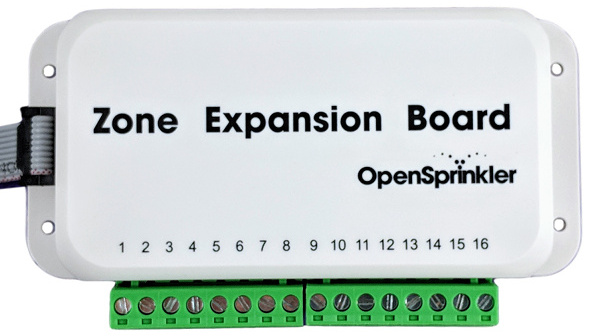
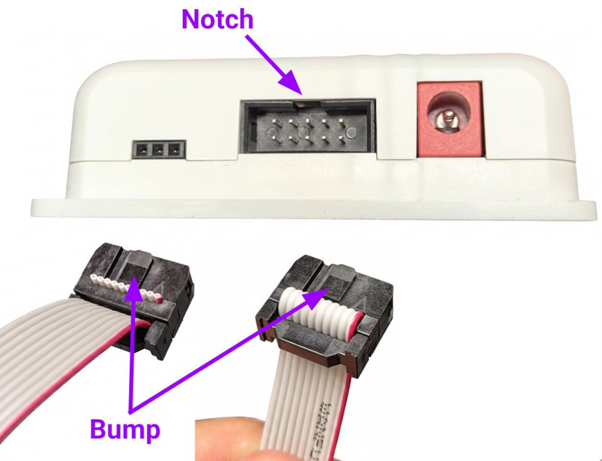

Zone Expander User Manual
Introduction

A Zone Expander adds 16 physical zones to an OpenSprinkler controller. The main controller provides the first 8 zones, and each expander adds another 16. OpenSprinkler v3 supports up to four expanders, for a total of 72 zones. OSPi supports up to 200 zones.
-
OpenSprinkler v3 AC/DC:
- Compatible with Zone Expander v3.
- Expander cable is a ribbon cable with a 2×5 connector on each end.
- Power model: an AC-powered OpenSprinkler v3 requires an AC Expander v3, while a DC-powered v3 requires a DC Expander v3.
-
OpenSprinkler v2.3 AC and OSPi (AC only):
- Compatible with AC Zone Expander v2.1
- Expander cable has a 2×4 connector on each end.
Hardware & Wiring
Power Off Before Making Changes
Always power off the main controller before making expander changes (connecting, disconnecting, re-wiring). Never plug in/out a ribbon cable or change DIP switch while the main controller is alive.
Use the Correct Expander Port
On OpenSprinkler v3, use the port on the left marked Expander. Do NOT use the port on the right marked Ether; that port is only for the wired Ethernet module.
1. Insert Expander Cable
- With the main controller powered off, plug one end of the ribbon cable into the main controller's Expander port. On OpenSprinkler v3, this is the port on the left. The connector is keyed and has a raised bump, which must align with the notch in the receptacle. When correctly oriented as shown below, the red stripe on the ribbon cable is always on the right side of the receptacle. If the connector does not seat easily, stop and check its orientation; never force it.

-
Plug the other end of the cable into the expander. Again, the connector is keyed, and its bump must match the notch at the top of the receptacle.
- Expander v3: The 2×5 ports on both sides of the expander are equivalent. Pick one, and use the other to link additional expanders.
- Expander v2.1: Connect the cable to the expander's IN port on the left. Daisy-chain additional expanders by following the OUT → IN links.
2. Expander Zone Wiring
- Connect each valve's zone wire to its numbered terminal on the expander.
- Join the other wire from every valve to the main controller's COM wire. Note that the expander has no common of its own — all zones share the main controller's COM.

3. Set the Expander Index

- For OpenSprinkler v3: each expander must have a unique index (
1-4) set by the two DIP switches on its back (see picture on the right). Before making changes to the DIP switches, always power off the main controller. - For OpenSprinkler v2.3 and OSPi: there is no DIP switch - the expander index is implied by the order they are daisy-chained.
| Expander | DIP switch positions | Index | Zones |
|---|---|---|---|
1st |
Down, Down |
1 |
9–24 |
2nd |
Up, Down |
2 |
25–40 |
3rd |
Down, Up |
3 |
41–56 |
4th |
Up, Up |
4 |
57–72 |
Software Configuration
After completing the expander wiring:
- Power on the controller.
- In the OpenSprinkler mobile app or web UI, go to Edit Options → Station Handling.
- Under Number of Stations, it shows the number of available zones, including those on detected expanders.
- Select the total number of zones you want to enable.
NOTE:
- While OpenSprinkler v3 can detect expanders, it does not automatically enable them. You must manually set the number of zones to enable.
- If the available zone count is incorrect, power off the controller, verify that every expander has a unique DIP-switch index and that all ribbon cables are connected correctly.
- You may enable more zones than physically available, to use them as Virtual Zones, such as Remote, HTTP(s), RF, GPIO.
Specifications
| Zone Expander | |
|---|---|
| Num. of Zones: | 16 |
| Solenoid Driver: | AC: 1 A/zone (triac) DC: 2 A/zone (MOSFET) |
| Dimensions: | 130 × 75 × 25 mm (5.1 × 3.0 × 1.0 in) |
| Weight: | 100 g (4 oz) |
Troubleshooting
For expander detection, power, wiring, and zone-output problems, see Power and Expander Troubleshooting.